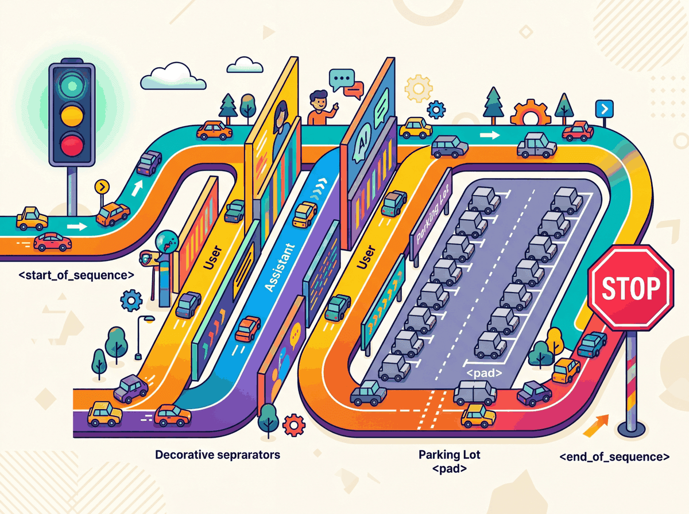

My chat template puts the system prompt in just the right place.
Token, Boundary-Confused AI Agent
My therapist says I have the same issue with boundaries. Tokenizer fertility is a fairness issue. Users of languages that tokenize inefficiently pay more per API call, get less context per request, and experience slower inference. Building on the BPE and Unigram algorithms from Section 1.6, fertility differences arise directly from how training corpora shape the merge rules. The research community is increasingly recognizing this, and newer models allocate more vocabulary space to non-English languages. Llama-3's expanded vocabulary (128K tokens) and GPT-4o's rebalanced training data represent steps toward more equitable tokenization.
Special tokens and chat templates are part of the model's vocabulary, not just formatting hints. The model learned during training to react to these exact byte sequences. Get the template wrong and you are talking to a model that no longer recognises its own instructions.
Chat templates are the secret handshakes of the LLM world. Llama-3 expects <|begin_of_text|><|start_header_id|>, ChatML wants <|im_start|>, and Mistral demands [INST]. Show up to a Llama party using ChatML and the model will politely treat your role markers as ordinary text, then hallucinate the rest of the conversation as if it overheard a stranger at the next table. The fix is one line: tokenizer.apply_chat_template(). Use it, or spend an afternoon wondering why your model has started referring to itself in the third person.
Special Tokens

Beyond the subword vocabulary, every tokenizer includes a set of special tokens that serve structural purposes. These tokens are never produced by the subword algorithm itself; they are manually added to the vocabulary and carry specific meanings that the model learns during training. Understanding special tokens is essential for correctly formatting inputs and interpreting outputs.
Common Special Tokens
| Token | Typical Symbol | Purpose |
|---|---|---|
| Beginning of Sequence | <s>, [CLS], <|begin_of_text|> |
Marks the start of input; signals the model to begin processing |
| End of Sequence | </s>, [SEP], <|end_of_text|> |
Marks the end of input or a boundary between segments |
| Padding | [PAD], <pad> |
Fills sequences to uniform length in batches; attention masks ignore these |
| Unknown | [UNK], <unk> |
Placeholder for tokens not in vocabulary (rare with subword tokenizers) |
| Mask | [MASK] |
Used in masked language modeling (BERT-style); replaced during pretraining |
| Role markers | <|system|>, <|user|>, <|assistant|> |
Delineate speaker roles in chat-format models |
As you can see, the same concept (marking sequence boundaries) appears under many different names across different model families.
There is no universal standard for special token names or IDs. BERT uses
[CLS] and [SEP]. Llama uses <s> and
</s>. GPT-4 uses <|endoftext|>. When working
with a new model, always check its tokenizer configuration to learn which special
tokens it expects and what IDs they map to. In Hugging Face, you can check the model
card or use tokenizer.name_or_path to identify which tokenizer is active.
Chat Templates
Modern LLMs that support conversation (ChatGPT, Claude, Llama Chat, Mistral Instruct) use a chat template that wraps user messages, system prompts, and assistant responses in a specific format using special tokens. The model was trained to expect this exact format, and deviating from it can degrade performance or cause unexpected behavior. We explore how to use these templates effectively through LLM APIs (Section 11.1) and prompt engineering (Chapter 12).
Example: ChatML Format
The ChatML format (used by some OpenAI models) wraps each message with role tags:
# ChatML template structure
template = """<|im_start|>system
You are a helpful assistant.<|im_end|>
<|im_start|>user
What is tokenization?<|im_end|>
<|im_start|>assistant
"""
# The model generates its response here, ending with <|im_end|>
print(template)
You now understand how tokenizers are trained, but knowing the algorithm is only half the story. When you actually deploy an LLM, you will encounter a different set of questions: What are those mysterious <|system|> tokens? Why does my Japanese prompt cost four times as much as the English version? How do I format a multi-turn conversation correctly? This section covers five practical topics that connect tokenization theory to real-world usage:
special tokens, chat templates, multilingual fertility, multimodal tokenization, and API cost estimation.
Prerequisites
This section assumes you understand BPE and other subword algorithms from Section 1.6 and the tokenization fundamentals from Section 1.5. The cost-estimation discussion connects naturally with the LLM API material covered later in the book, but you can read this section independently.
Example: Llama-3 Chat Format
Llama-3 uses a distinct set of special tokens to delimit system, user, and assistant turns in multi-turn conversations.
# Llama 3 chat template
template = """<|begin_of_text|><|start_header_id|>system<|end_header_id|>
You are a helpful assistant.<|eot_id|><|start_header_id|>user<|end_header_id|>
What is tokenization?<|eot_id|><|start_header_id|>assistant<|end_header_id|>
"""
Notice that the special tokens differ between models, and the exact placement of
newlines matters. The Hugging Face transformers library provides a
apply_chat_template() method that handles this formatting automatically:
# Using Hugging Face chat templates
from transformers import AutoTokenizer
# Load tokenizer with vocabulary matching the model
tokenizer = AutoTokenizer.from_pretrained("meta-llama/Llama-3.1-8B-Instruct")
messages = [
{"role": "system", "content": "You are a helpful assistant."},
{"role": "user", "content": "What is tokenization?"},
]
formatted = tokenizer.apply_chat_template(
messages,
tokenize=False, # return string, not token IDs
add_generation_prompt=True # add the assistant header
)
print(formatted)
Manually constructing chat prompts by guessing the format is a common source of bugs.
If the model expects <|im_start|> and you provide
[INST], the model will treat your role markers as ordinary text
rather than structural delimiters. Always use the tokenizer's built-in
apply_chat_template() or consult the model's documentation.
<|im_start|>system You are a helpful assistant. <|im_end|> <|im_start|>user Explain BPE vs WordPiece <|im_end|> <|im_start|>assistant Response... <|im_end|>
<|im_start|>, <|im_end|>) delineate system instructions, user messages, and assistant responses. Colors indicate the three roles: system, user, assistant.The Tiktoken Library
tiktoken is OpenAI's open-source tokenizer library, written in Rust with Python bindings for performance. It implements the BPE tokenizers used by GPT-3.5, GPT-4, GPT-4o, and related models. For any application that interacts with OpenAI's APIs, tiktoken is the authoritative tool for counting tokens, estimating costs, and debugging tokenization behavior. It is also widely used as a general-purpose BPE tokenizer for non-OpenAI workflows because of its speed and simplicity.
Installation and Basic Usage
The following snippet installs tiktoken, loads a model-specific encoding, and tokenizes a sample string.
# Install tiktoken
# pip install tiktoken
import tiktoken
# Load by model name (recommended)
enc = tiktoken.encoding_for_model("gpt-4o")
# Or load by encoding name directly
enc_cl100k = tiktoken.get_encoding("cl100k_base") # GPT-4, GPT-3.5
enc_o200k = tiktoken.get_encoding("o200k_base") # GPT-4o
# Encode text to token IDs
text = "Tokenizers split text into subword units."
tokens = enc.encode(text)
print(f"Text: {text}")
print(f"Token IDs: {tokens}")
print(f"Token count: {len(tokens)}")
# Decode token IDs back to text
decoded = enc.decode(tokens)
print(f"Decoded: {decoded}")
# Inspect individual tokens
for token_id in tokens:
token_bytes = enc.decode_single_token_raw(token_id)
print(f" {token_id:6d} -> {token_bytes}")
Two key details deserve attention. First, tiktoken is significantly faster than pure Python tokenizers because the core BPE algorithm runs in Rust. Tokenizing a million characters takes roughly 100ms with tiktoken versus 2 to 5 seconds with a pure Python implementation. This matters for batch processing and real-time cost estimation. Second, different OpenAI models use different encoding schemes: cl100k_base (100,256 token vocabulary) for GPT-4 and GPT-3.5, and o200k_base (200,019 token vocabulary) for GPT-4o. Always match the encoding to the model you are calling, or use encoding_for_model() to let tiktoken select automatically.
Tiktoken only implements OpenAI's BPE tokenizers. For other model families (Llama, Mistral, Gemma), use the Hugging Face transformers library: AutoTokenizer.from_pretrained("model-name"). The tokenizers library by Hugging Face also provides fast Rust-backed tokenization for SentencePiece and other algorithms. When comparing token counts across providers, always use each provider's own tokenizer.
Load any model's tokenizer with a single line using Hugging Face Transformers.
# pip install transformers
from transformers import AutoTokenizer
# Load the tokenizer that ships with a specific model
tok = AutoTokenizer.from_pretrained("meta-llama/Llama-3.2-1B")
text = "Tokenization determines cost and context usage."
ids = tok.encode(text)
print("Token IDs:", ids)
print("Tokens:", tok.convert_ids_to_tokens(ids))
print("Decoded:", tok.decode(ids))
print(f"Token count: {len(ids)}").model file holding the vocabulary, per-piece unigram log-probabilities, and Unicode normalization rules. The same file is loaded at inference: encode finds the Viterbi-optimal segmentation under the unigram score, and decode reverses it losslessly, including the special whitespace marker ▁ that lets SentencePiece round-trip arbitrary text.Load a SentencePiece model directly (used by T5, ALBERT, and Llama 1/2). SentencePiece treats text as a raw Unicode byte stream and scores any segmentation $S = (t_1, \ldots, t_m)$ of a word under a unigram language model:
$$ P(S) = \prod_{i=1}^{m} P(t_i), \qquad S^{*} = \arg\max_{S} P(S) $$
Decoding picks the highest-probability segmentation via Viterbi. For training-time data augmentation, the library also samples a segmentation from a temperature-smoothed distribution (subword regularization, Kudo 2018):
$$ P_{\alpha}(S) \propto \bigl(\prod_i P(t_i)\bigr)^{\alpha}, \qquad 0 < \alpha \le 1 $$
Lower $\alpha$ flattens the distribution and surfaces alternative segmentations; $\alpha = 1$ recovers the deterministic Viterbi tokenization.
Suppose a trained SentencePiece Unigram model assigns these log-probabilities to subwords of "internalize":
internal: log P = -3.2;ize: log P = -4.1intern: log P = -4.0;alize: log P = -5.5in: log P = -2.7;ternal: log P = -6.4;ize: log P = -4.1
Sum of log-probs per candidate: (internal, ize) = -7.3 (winner), (intern, alize) = -9.5, (in, ternal, ize) = -13.2. Viterbi returns ("internal", "ize"). With subword regularization at $\alpha = 0.2$, the three candidates have sampling probabilities roughly proportional to $e^{0.2 \cdot \text{logP}}$: 0.23, 0.19, 0.10 (after normalization), giving the trainer a noisy but principled way to expose the model to alternative splits.
# pip install sentencepiece
import sentencepiece as spm
# Load a pre-trained SentencePiece model (e.g., from a T5 download)
# sp = spm.SentencePieceProcessor(model_file="spiece.model")
# Or train a tiny one for demonstration
import tempfile, os
tmp = tempfile.NamedTemporaryFile(mode="w", suffix=".txt", delete=False)
tmp.write("Language models learn subword tokenization.\n" * 100)
tmp.close()
spm.SentencePieceTrainer.train(
input=tmp.name, model_prefix="demo_sp", vocab_size=64,
model_type="bpe"
)
sp = spm.SentencePieceProcessor(model_file="demo_sp.model")
print("Pieces:", sp.encode("Language models", out_type=str))
os.unlink(tmp.name)Chat template standardization is an ongoing challenge. Different model families (Llama, Mistral, ChatML, Claude) use different special token conventions. Multimodal tokenization (handling images, audio, and video alongside text) is a rapidly evolving area, with models like GPT-4o and Gemini 2.0 using vision encoders that produce "visual tokens" interleaved with text tokens. The economics of tokenization (cost per token in API pricing) continues to shape how practitioners design prompts.
You now know how text becomes token IDs. In Chapter 2, you will learn how those token sequences are processed: first by recurrent neural networks that read one token at a time, then by the attention mechanism that lets the model look at all tokens simultaneously.
Load meta-llama/Llama-3.2-1B-Instruct via AutoTokenizer and tokenize the same conversation two ways: once using apply_chat_template(messages) and once using the ChatML format string (<|im_start|>system\n...<|im_end|>). Compare the token sequences and identify the specific tokens that differ.
Answer Sketch
The Llama-3 template produces <|begin_of_text|>, <|start_header_id|>, <|end_header_id|>, and <|eot_id|> as single specialized tokens (one ID each). The ChatML version is encoded as ordinary text: <|im_start|> becomes 5 to 7 ordinary BPE tokens because Llama-3 has no <|im_start|> in its vocabulary. The model treats role markers as content, so it hallucinates the next turn instead of stopping at <|eot_id|>.
Using tiktoken.encoding_for_model("gpt-4o"), count the tokens in a 1500-character paragraph of English prose, then in a translation of the same paragraph into Japanese. Compute the per-language input cost at $2.50 per million tokens. Expected ratio: Japanese should cost roughly 2 to 4 times more than English for the same content.
Answer Sketch
Typical observation: 1500 English chars yield about 350 tokens (cost ≈ $0.00088); the same content in Japanese yields about 900 to 1200 tokens (cost ≈ $0.00225 to $0.0030), a 2.5x to 3.5x ratio. The exact ratio depends on how much CJK vocabulary the o200k_base tokenizer has absorbed; older cl100k_base showed ratios closer to 4x. This is the tokenizer-fertility tax.
You now know how to recognise special tokens, apply chat templates, and call tiktoken with the right encoding. Next we measure the fairness of these tokenizers across languages, study how images and audio are tokenized, and translate token counts into dollar costs. Continue with Section 1.8: Multilingual Tokenization, Multimodal Tokens, and Cost Estimation.